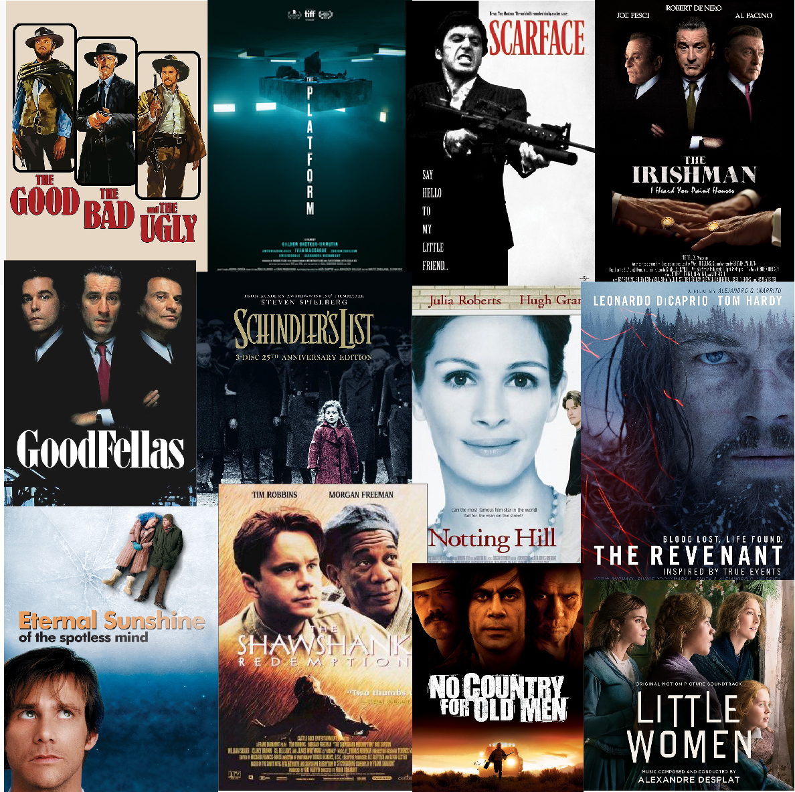

voltar
Filmes

A Plataforma (2019) - Thriller/Terror
Scarface (1983) - Crime/Drama
The Irishman (2019) - Crime/Drama
No Country for Old Men (2007) - Crime/Drama
Goodfellas (1990) - Crime/Drama
Schindler's List (1993) - Guerra/Drama
The Shawshank Redemption (1994) - Drama/Ficção Policial
The Revenant (2015) - Faroeste/Drama
The Good, the Bad and the Ugly (1966) - Faroeste/Spaghetti Western
Little Woman (2019) - Romance/Drama
Nothing Hill (1999) - Romance/Comédia
Eternal Sunshine of the Spotless Mind (2004) - Romance/Ficção Científica